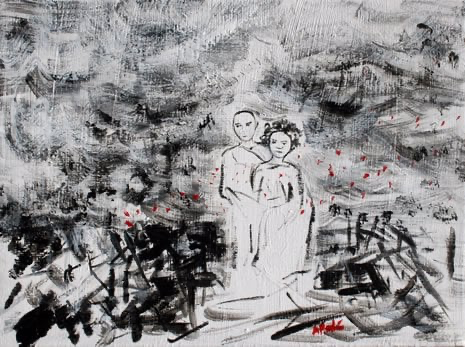
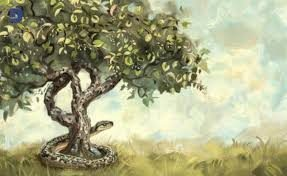
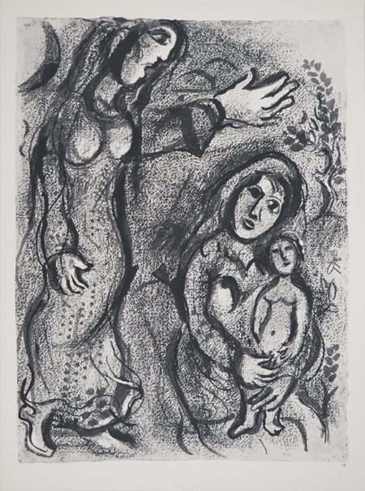
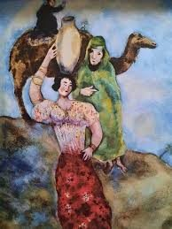
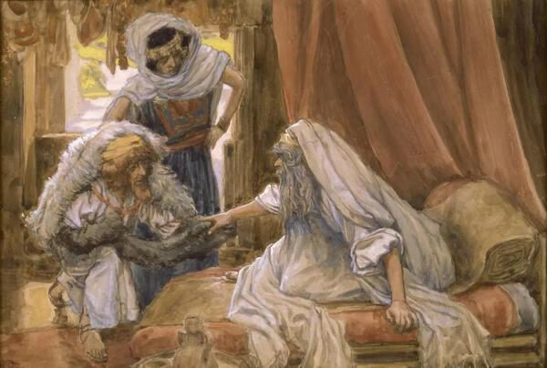
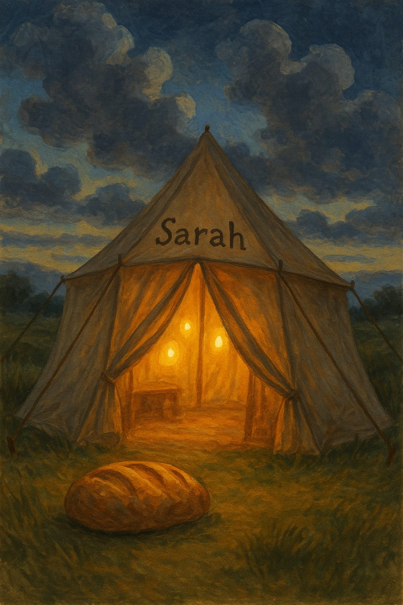
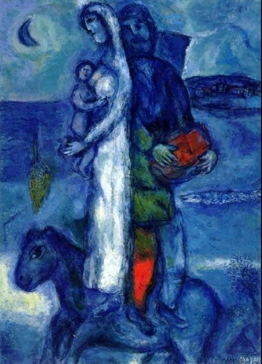
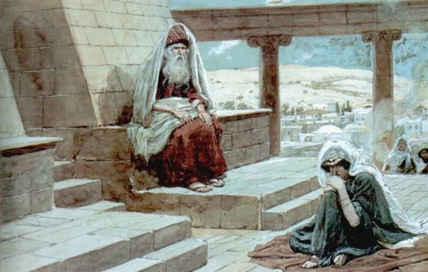

Hayé Sarah 5786
Que vivent nos mères
La parole féminine
À l’image de l’arc-en-ciel et de ses sept couleurs, signe d’alliance et promesse du Créateur de ne plus anéantir Sa création, nous avons expliqué que D. s’engage désormais à agir avec mesure, à travers Ses sept attributs. Il sélectionne alors sept hommes d’exception, chacun porteur d’un de ces attributs divins, afin qu’à travers eux se réalise le but ultime : faire de l’Homme l’associé de la Création.
Nous avons vu comment Avraham incarne le ‘Hessed, la bonté absolue, et Its’hak la Gvoura, la rigueur et la retenue. Mais avant d’aborder la synthèse de ces deux forces qu’incarnera Yaacov, la Torah nous relate, dans la paracha de ‘Hayé Sarah, des récits fondateurs et notamment la mort de Sarah et le choix de l’épouse d’Its’hak, Rivka.
Au fil de ces épisodes, on découvre les remarquables qualités spirituelles et morales de ces femmes, qui constituent des piliers essentiels de la lignée d’Israël.
Car les femmes ne sont aucunement exclues du projet divin ; bien au contraire, elles y jouent un rôle indispensable et tout aussi essentiel que les hommes.
Elles représentent la terre, ce fondement indispensable sur lequel l’arc-en-ciel doit se poser.
Pour saisir toute la profondeur de l’histoire de ces femmes, Puis, nous verrons comment nos mères Sarah et Rivka, par leurs choix et leur élévation, vont restaurer cette parole divine, lui redonner sens et orientation, inscrivant ainsi l’histoire d’Israël dans la réconciliation entre le ciel et la terre. Et enfin comment une mère d’exception H’anna complétera la réparation de la faute de H’ava en reliant la Créature et la Création au travers de la Tefila. |
 Adam et Eve après leur départ du jardin d’Eden, représenté par Alyse Radenovic |
|---|
Leur parcours révèle la métamorphose du féminin exilé depuis la faute de H’ava en un féminin illuminé, porteur de sens et capable de renouer le dialogue avec le Divin.
À travers les femmes, la Torah révèle comment la voix du monde, la parole humaine, est réparée, et passe de la dispersion à la clarté, de la confusion à la prière.
Hava : la parole brisée
Le récit de la faute originelle révèle ainsi la première fracture, consécutive à la première discussion de l’histoire.
Après la création de H’ava, Adam lui relate l’ordre de ne pas consommer du fruit de l’arbre de la connaissance du bien et du mal et il y ajoute une précaution, une barrière1 : celle de ne pas toucher à l’arbre.
Le serpent, rusé et manipulateur, exploite cette nuance. En dialoguant avec elle, il lui fait dire que D. a interdit d’y toucher « ולא תגעו בו » (Beréchit 3,3), un ajout subtil mais initialement absent du commandement initial stricto sensu. Saisissant l’occasion, il la pousse contre l’arbre, et en voyant qu’il ne se passe rien, que D. ne réagit pas, elle se perd et franchit l’étape suivante : la consommation du fruit interdit de l’arbre de la connaissance du bien et du mal… |
 |
|---|
S’ensuit la catastrophe bien connue, l’homme est chassé du Gan Eden et entre en exil car H’ava a mal interprété l’ordre divin, et l’a déformé par la parole.
La parole, outil de création, est devenue un instrument d’interprétation et de confusion. La mort et les châtiments prennent alors place dans le monde.
Mais ces « châtiments » sont en réalité des modalités de réparation : le passage « בעצב תלדי בנים dans la peine tu enfanteras des fils » (Berechit (3,16)) n’exprime pas seulement une punition, mais la reconnexion du corps au spirituel. Désormais, face à l’émergence de la mort, il revient à la femme d’assurer la transmission de la vie et de guider, par la parole, l’instruction et l’éducation des générations futures.
Le tikkoun, la réparation, commencera ainsi, lorsque la bouche qui avait déformé la parole divine saura à nouveau la faire résonner dans la vérité.
C’est par la parole que le monde fut créé, c’est par la parole d’Adam et H’ava qu’il fut corrompu, et c’est encore par la parole qu’il sera réparé.
Remarquons pour les besoins de l’étude que le texte de la Torah ne mentionne aucun échange verbale entre Adam et H’ava au moment où elle l’entraîne vers la consommation du fruit défendu mais nous verrons plus tard qu’il y a d’autres avis sur ce passage (cf note de bas de page n°4).
Sarah : la parole juste
Sarah première femme qui endossera le rôle de mère d’Israël, est la première à initier cette réparation. Pour mesurer la portée de ses actes, nous sommes obligés de revenir sur la première scène de ménage de la Torah. L’épisode se situe après la naissance d’Its’hak.
Avraham, devenu père dans sa vieillesse, célèbre la vie retrouvée, la bonté divine sans limite, le H’essed. Mais au sein de cette joie, une dissonance apparaît : Ichmaël, fils d’Avraham et de Hagar, raille Its’hak. Sarah perçoit immédiatement le danger spirituel qui en découle. Elle ne voit pas seulement une querelle d’enfants, elle discerne une incompatibilité de Elle demande alors à Avraham : « Chasse cette servante et son fils, car le fils de cette servante n’héritera pas avec mon fils, avec Its’hak. » (Beréchit 21, 10) Avraham est troublé. Sa nature profonde est la bonté universelle, il ne supporte pas l’idée d’exclure. Mais Dieu intervient et tranche : « Tout ce que te dira Sarah, écoute sa voix. » (21, 12). Rachi commente : « למדנו שיש בה רוח הקודש », « Nous apprenons qu’elle est inspirée par l’esprit de sainteté. ». |
 Marc CHAGALL (1887-1985) La mère et son enfant : Agar et Ismaël dans le désert |
|---|
Cette phrase marque un moment charnière de la Torah. Pour la première fois, la voix d’une femme est consacrée par D. comme une expression de la vérité prophétique. Sarah devient la première femme dont la parole est reconnue comme prophétique, elle parle avec la rouah ha-kodech, l’esprit de sainteté, non pas selon ses émotions, mais selon la vision divine.
La demande de Sarah n’est pas une conséquence d’une quelconque jalousie, mais celle de son discernement. Avraham incarne le h’essed, la bonté illimitée, or, une bonté sans mesure peut devenir confusion : vouloir inclure tout le monde, c’est parfois affaiblir la vérité. Sa parole n’exclut pas pour rejeter2, mais pour préserver la promesse, pour tracer les frontières qui permettront à la bénédiction de s’accomplir.
Sarah introduit ainsi la mesure de justice, la Gvoura, la justice discernée, mida qu’elle partagera avec son fils Itsh’ak. C’est la rigueur qui protège la sainteté, pour contrebalancer son époux entièrement Hessed.
Avec Sarah, le féminin retrouve sa voix juste. Là où H’ava avait parlé pour mélanger, Sarah parle pour séparer et discerner. Là où la parole féminine avait provoqué la chute, elle devient ici parole de réparation.
Sarah réalise le premier tikkoun, la première réparation par la mesure de justice. Elle enseigne que la vérité ne s’oppose pas à la bonté, mais qu’elle en est la condition. Sa voix ne trouble plus la création, elle la soutient. Ainsi, « écoute sa voix » devient le secret de la réparation du féminin. Sarah a mis au monde son pendant masculin, Its’hak.
Mais son travail de réparation de la faute de Hava ne s’arrête pas là, elle va plus loin, quitte à en donner sa vie.
En effet, comme nous l’avons vu dans la paracha de Lekh Lekha, Its’hak devra lui aussi traverser une transformation, un processus d’adoucissement des rigueurs (mitouk ha-dinim), qui s’accomplira pleinement lors de l’épisode de la ‘Akéda.
La mort de Sarah, survenue précisément au moment où Avraham s’apprête à offrir son fils, ne peut être comprise comme la simple douleur d’une mère perdant son enfant. C’est un événement d’une portée bien plus profonde : Sarah et Its’hak partagent en quelque sorte une même âme. Et puisque l’âme d’Its’hak devait être transformée, Sarah, dans une forme de consentement, participe à ce sacrifice.
Le cri qu’elle pousse au moment de sa mort, relaté par Rachi au premier verset de ‘Hayé Sarah, n’est pas seulement un cri de désespoir, de douleur mais l’expression de cette plénitude spirituelle : ses paroles, son discernement et sa vision prophétique, ont atteint leur accomplissement. Permettez-moi d’extrapoler et de considérer qu’on assiste ici à la première tefila féminine formulée au paroxysme de la vie de Sarah, par un cri3.
Son cycle s’achève alors : sa tefila permet de nouveau de réaliser une étape du tikoun de H’ava, l’histoire peut désormais se poursuivre, Itsh’ak peut épouser Rivka et faire advenir la promesse du peuple juif.
Rivka : la parole mesurée
Après Sarah, Rivka prend le relais de la réparation du féminin.
Après la mort de Sarah, Avraham envoie son serviteur Éliézer chercher une épouse pour Its’hak. Eliezer demande alors un signe à D. pour ne pas se tromper d’épouse et réussir sa mission : « Que la jeune fille à qui je dirai : fais-moi boire un peu d’eau… et qui répondra : bois, et j’abreuverai aussi tes chameaux, soit celle que Tu as désignée pour Its’hak. » (Beréchit 24,14). Le texte poursuit en nous racontant que cela se passe exactement comme souhaité : « il n’avait pas encore fini de parler » (précise le texte au verset suivant) que Rivka arrive, lui donne de l’eau à sa demande et propose par elle-même d’abreuver ses chameaux. |
 Marc Chagall Rebecca Gives a Drink to the Servant of Abraham, 1931 |
|---|
Eliezer n’a plus de doute, Rivka est celle qui faudra présenter à Its’hak. Car si Sarah avait pu réintroduire la rigueur dans la bonté d’Avraham, Rivka saura accomplir le tikkoun du h’essed lui-même et l’introduire dans la rigueur de son époux.
Elle transforme la bonté instinctive en bonté consciente, mesurée, orientée vers la vérité.
Cette grille de lecture permet de comprendre un autre passage plus difficile à accorder avec l’image d’une mère aimante et remplie de bonté. Après la naissance de Yaacov et Essav, la Torah nous décrit deux trajectoires opposées: Essav, chasseur, homme de terrain, incarne la force brute, la gvoura non adoucie, Yaacov, homme des tentes, cherche la vérité et la lumière intérieure. Its’hak, qui semble aveuglé par son amour paternel et par la douceur de la nourriture qu’Essav lui prépare, s’apprête à transmettre la bénédiction à Essav son fils ainé.
Mais Rivka, dotée de rouah’ hakodech (inspiration divine), perçoit que la bénédiction appartient à Yaacov : c’est par lui que doit se réaliser la lignée d’Avraham. C’est alors qu’elle dit à Yaacov : “ועתה בני שמע בקולי” : « Et maintenant, mon fils, écoute ma voix. » (Beréchit 27,8).
Autrement dit, elle demande à Yaacov de lui faire confiance, même si ce qu’elle lui demande le dépasse. Elle lui ordonne de prendre deux chevreaux du troupeau, de les cuisiner comme son père les aime, et de se présenter à la place d’Essav pour recevoir la bénédiction. Yaacov hésite. Il craint non seulement de tromper son père, mais d’agir contre la vérité. « Peut-être mon père me touchera-t-il, et je serai à ses yeux comme un trompeur », dit-il (Beréchit 27,12). Il redoute la faute. Mais Rivka insiste : “עלי קללתך בני” : « Que ta malédiction soit sur moi, mon fils. » (27,13) Elle prend sur elle le poids spirituel de l’acte, consciente qu’elle agit par rouah’ hakodech : inspiration divine. Elle sait que l’enjeu n’est pas une simple bénédiction matérielle, mais le passage du flambeau d’Avraham à Yaacov, celui qui deviendra par la suite Israël. |
 Jacob trompe Isaac (Rebekah à l'arrière). James Jacques Joseph Tissot. c. 1896-1902. |
|---|
À première lecture, la conduite de Rivka semble difficile à concilier avec l’image d’une épouse et mère pleine de bonté et de droiture. Comment comprendre qu’elle incite son fils à « tromper » son père ? En réalité, Rivka n’agit ni par ruse ni par favoritisme : elle agit par lucidité spirituelle. Elle sait que le plan divin dépasse les apparences, et que la bénédiction, si elle tombait entre les mains d’Essav, serait dévoyée. Sa bonté n’est pas immédiate et instinctive mais calculée et mesurée.
Cette phrase « Et maintenant, mon fils, écoute ma voix », résonne comme l’écho inversé de la faute originelle. H’ava avait entrainé Adam à la faute sans échanges verbales dans le texte de la Torah4, le conduisant à la désobéissance. « …elle cueillit de son fruit (de l’arbre) et en mangea, puis en donna à son époux, et il mangea » (Berechit 3,6). Rivka, au contraire, dit à Yaacov : « Écoute ma voix », pour lui permettre de recevoir la bénédiction divine.
Ainsi, là où la première femme avait détourné la parole pour rompre l’alliance, Rivka la redresse pour la restaurer. Sa voix, cette fois, n’est plus trompeuse, mais constructive et prophétique.
Il serait certainement pertinent d’approfondir l’importance de la communication entre les genres, qui constitue une condition fondamentale à la solidité d’une relation de couple et même sur le plan halakhique une condition nécessaire à l’union d’un couple, je propose néanmoins dans le cadre de cette modeste étude de nous concentrer sur l’évolution de la parole féminine.
Absente au début de l’histoire entre Adam et H’ava, la parole apparait mais semble difficile et douloureuse entre Sarah et Avraham, D. lui-même devra trancher et réhabiliter la parole féminine en lui demandant d’“écoute(r) sa voix”. Rivka, elle, suppliera son fils : ’“Écoute ma voix”. Ainsi, la parole féminine, retrouve progressivement sa place car l’essentiel de la réparation de la féminité passe par la parole. Elle doit être utilisé de manière juste et mesurée à bon escient pour soutenir l’époux, l’enfant, l’autre.
Mais cela ne s’arrete pas là, Revenons un peu en arrière, dans l’histoire, Rivka, est emmenée par Eliezer à Its’hak qui l’accepte comme épouse lorsqu’il constate que les miracles dont bénéficiait le foyer de Sarah se renouvelle.
Citons le midrash sur le verset : « Isaac la fit entrer dans la tente de sa mère Sarah » (Genèse 24, 67) :
« Tous les jours où Sarah était en vie, un nuage était suspendu à l’entrée de sa tente ; lorsqu’elle mourut, ce nuage disparut, quand Rébecca vint, le nuage revint. Tous les jours où Sarah était en vie, les portes de sa tente étaient largement ouvertes ; lorsqu’elle mourut, cette ouverture cessa, quand Rébecca vint, l’ouverture revint. Tous les jours où Sarah était en vie, la bénédiction reposait sur sa pâte ; lorsqu’elle mourut, cette bénédiction cessa ; quand Rébecca vint, elle revint. Tous les jours où Sarah était en vie, une lampe brûlait du soir du Shabbat jusqu’au soir du Shabbat suivant ; lorsqu’elle mourut, cette lampe s’éteignit ; quand Rébecca vint, la lampe revint. Quand il vit qu’elle agissait comme sa mère, séparant la h’alla dans la pureté et pétrissant sa pâte dans la pureté, aussitôt il la fit entrer dans la tente. » (Midrash Rabba, 60,18) |
 |
|---|
Les sages (et notamment, le Maharal de Prague dans le gour Aryé sur le Rachi afférent au verset qui cite le midrash) voient dans trois5 de ces miracles, les signes que Rivka pratiquait les mitsvots fondamentales de la femme : la pureté familiale, Nida (le nuage), l’allumage des bougies (Hadklakat nérot) de Chabbat, et le prélèvement de la H’alla, dont les initiales forment la fête très appréciée des femmes juives séfarades le חנה H’enné, et qui permettent aux femmes de réparer la faute de H’ava.
En effet, selon l’interprétation de certains commentateurs, la faute attribuée à ‘Hava a engendré trois conséquences. Adam possédait initialement un corps de lumière, lumière qui a été opacifiée après la consommation du fruit interdit. Pour cette raison, la Mitsvah d’allumer les bougies du Chabbat est traditionnellement confiée aux femmes, pour restaurer cette lumière. Il est également établi qu’Adam représente une parcelle de terre issue de différents lieux de la planète, ce qui fait de lui l’équivalent de la « ‘Halla » de la création, ce qui justifie le lien particulier des femmes avec la Mitsvah de prélever la ‘Halla, consécutive de la transgression originelle ayant affecté cette dimension. Enfin, la mort est apparue à ce moment-là, affectant également le potentiel de vie, notamment chez la femme. Les menstruations sont ainsi interprétées comme une manifestation des limites introduites des capacités reproductives. Les femmes ont alors un rôle essentiel dans le maintien de la pureté familiale. La présence d’une nuée couvrant la tente de Sarah est présentée comme un signe de pudeur et de respect entourant la matriarche.
Ces miracles permettront à Itsh’ak de valider le choix de son épouse, de l’aimer et de l’accepter pleinement pour poursuivre la mission de réparation de la faute de H’ava.
Mais les initiales de ces mitsvots forment également les lettres de celle qui va accomplir pleinement le tikoun, la réparation de H’ava : H’anna.
H’anna : la parole de prière
Le voyage de nos mères stériles6 aboutit ainsi à une autre mère stérile du peuple d’Israël, H’anna.
H’anna est l’une des deux épouses d’Elkana. Son nom, formé de la racine חן (h’en, la grâce), exprime la beauté intérieure, la réceptivité spirituelle. Mais cette grâce est d’abord voilée : Lors d’une montée au sanctuaire de Chilo, elle se tient « devant Hachem » (לפני ה׳). Le texte dit : “והיא מרת נפש” (Chmouel 1, verset 10): “Elle avait l’âme amère.” Ce n’est pas une plainte, mais une amertume tournée vers le haut, la conscience d’un vide qui cherche sa source, d’une réparation impossible en l’absence d’un enfant. C’est ainsi qu’elle met à jour une manière nouvelle de prier : silencieuse, concentrée, intérieur. |
 Marc Chagall | Hannah Praying to God |
|---|
Elle sera exaucée et enfantera de l’un des plus grands prophètes : Chmouel, qui aura la lourde charge de choisir et d’oindre les premiers rois d’Israel.
La Tefila de H’anna est tellement puissante, que le Talmud (Berahot 31a) déduira des versets qui la constitue, les fondements mêmes de la ‘Amida, la prière centrale du judaïsme.
La Halah’a, et notamment le Rambam (Hilh’ot Tefila 4:16) codifie également ainsi ces lois: « Quelle est la manière convenable de prier ? Celui qui prie doit orienter son cœur dans toutes les bénédictions et se considérer comme se tenant devant la Présence divine. Il doit incliner légèrement la tête, se tenir avec crainte et révérence, ne pas élever la voix dans sa prière, mais prier à voix basse. Il ne doit pas remuer seulement les lèvres, mais faire entendre à son oreille ce qu’il prononce doucement de sa bouche. Et il doit s’incliner et courber la tête comme un homme se tenant devant le roi. »
Chaque verset de sa prière devient ainsi un principe de loi :
“והיא מדברת על לבה” : « Elle parlait à son cœur » : la kavana (intention du cœur) est l’essence de la prière “רק שפתיה נעות” : « Ses lèvres bougeaient » : les lèvres doivent articuler les mots, même en émettant un faible son. “וקולה לא ישמע” : « Sa voix ne s’entendait pas » : la prière doit être dite à voix basse. “ויחשבה עלי לשכורה” : Éli, le Cohen Gadol de l’époque, « la prit pour une ivrogne » : celui qui prie doit rester lucide et conscient. |
 |
|---|
H’anna n’enseigne donc pas seulement une émotion de prière, mais la structure même de la tefila juive : la présence du cœur, l’articulation des lèvres et le silence de la voix. Elle établit une norme et par la meme répare la faute de Hava7 car désormais la feminité est reconnecté à D. elle est en téfila.
Allons un peu plus loin dans notre compréhension de la prière juive.
La Tefila, est un combat contre soi-même, nous devons étymologiquement “bouger/agir” en nous : להפלל afin de prendre conscience, que D. nous donne dèja tout ce qu’il faut pour réaliser notre mission, et que nous n’avons rien besoin de plus.
La prière juive ne doit donc pas être appréhendée comme une simple demande, mais comme un déballage du mode opératoire de dévoilement de la lumière, organisé finement par les sages de la grande assemblée, permettant de mesurer que l’on a dèja tout ce qu’il faut.
On ne “demande” pas la santé, mais on constate que D. donne la santé, en exprimant la braha relative dans la amida, et on recalibre nos canaux de reception en fonction.
Ce combat contre soi-même, c’est-à-dire contre sa volonté (humaine et naturelle) d’avoir autre chose que ce que le Créateur nous donne, nous permet de nous éléver et de prendre conscience que D. est présent dans nos vies, et qu’ils agit dans nos âmes, derrière les voiles de notre matérialité, inscrivant de facto nos histoires, nos vies dans la réparation globale de la faute d’Adam et H’ava. L’exil du Gan Eden correspond en réalité à un voilement, une opacification de la lumière du monde à venir dans ce monde-ci, nous sommes alors mis en situation de dévoiler la lumière divine inscrite en nous, celle qui a été caché par D. suite à la faute originelle.
Et cette clarification, se réalise au travers des attributs supérieurs divins qui nous animent:
La ‘Ho’hma, la Sagesse divine emballée dans le discernement, la Bina, qui permet d’avoir la conscience de la royauté divine.
Dans le langage des maîtres de la mystique juive, la ‘Ho’hma et la Bina ne sont pas seulement deux « facultés intellectuelles ». Elles décrivent un mouvement intérieur : celui par lequel une intuition divine devient conscience vécue, jusqu’à s’incarner dans la Malkhout, la royauté,
c’est-à-dire la façon dont D. est reconnu comme Roi dans ce monde.
La ‘Ho’hma, c’est l’étincelle. C’est la Sagesse divine telle qu’elle se dépose en nous sous forme de point, de fulgurance, de vérité pressentie. Elle n’est pas encore structurée, expliquée, ni formulée. C’est le moment où l’âme « sait » quelque chose avant même de pouvoir le dire : une clarté qui traverse, un éclair.
La Bina, c’est le dépliage de cette étincelle. C’est la capacité de prendre ce point de ‘Ho’hma et de le développer, de le comprendre, de le discerner, de lui donner des contours. Bina, c’est le travail intérieur qui répond : « qu’est-ce que cette lumière implique concrètement pour moi, pour ma vie, pour mon corps, pour ma parole ? »
Mais sans Bina, la ‘Ho’hma reste abstraite ; sans ‘Ho’hma, la Bina n’est pas , c’est une analyse non féconde car détachée de la source divine. Il faut que la ‘Ho’hma se laisse « emballer » par la Bina : c’est-à-dire que l’intuition divine accepte d’entrer dans le travail patient du discernement, alors peut naître une vraie conscience de la Malh’out, de la royauté divine.
Car la Malh’out, ce n’est pas seulement proclamer que D. est Roi, c’est de le vivre en pleine conscience, l’infiltrer dans sa manière de parler, de manger, d’aimer, de poser des limites, de sanctifier le temps, de réaliser les commandements divins…
Et c’est exactement le processus que réalisent les mitsvots de la femme.
En effet, les lois de prélèvement de la h’ala correspondent à la ‘ho’hma, la Sagesse divine (on ne donne du pain à un enfant que lorsqu’il est assez sage pour pouvoir le mâcher avec ses dents8) cachée dans la matière du monde, dans le pain qui nourrit.
Les lois de pureté familiale de Nida9 correspondent à la bina, aux facultés de discernement (elles sont principalement données à la femme qui peut discerner les différentes teintes du rouge) entre le pur et l’impure, la vie et le retrait de la vie.
Et enfin la mitsva de la Hadlakat Nérot, l’allumage des bougies, correspond à la Mal’hout, à la manifestation visible de la royauté divine dans la maison, dans la lumière qui éclaire le foyer le Chabbat.
On comprends dès lors que les initiales de H’anna, sont celles des 3 mitsvots de la femme, puisque c’est elle qui complète la réparation de H’ava et nous apprend les principes de la Tefila qui permet de reproduire ce mouvement et de prendre conscience de la royauté divine car la Tefila de H’anna illustre ce passage de la ‘Ho’hma à la Bina, puis à la Malkhout.
Au départ, il y a une douleur très pure, presque nue : le sentiment que quelque chose manque au monde si elle n’a pas d’enfant, l’intuition que sa maternité fait partie du plan divin, c’est la ‘Ho’hma.
Elle ne s’arrête pas à ce point d’émotion : elle l’intègre, elle le travaille, elle le transforme en mots murmurés, en kavana, en dialogue intérieur avec D., c’est la Bina.
Et de cette Bina naît une nouvelle Malkhout : non seulement elle enfante Chmouel, qui consacrera les rois d’Israël, mais elle fonde aussi, par sa tefila, la forme même de la prière juive, manière concrète de reconnaître la royauté divine trois fois par jour.
Permettez moi de reboucler sur la faute originelle en nterprétant le texte :
Il est écrit que les yeux d’Adam et Hava se sont ouverts, leurs permettant de prendre conscience de l’existence du bien et du mal, le verbe utilisé par la Torah est וַתִּפָּקַחְנָה vatipakha’na. Le début du mot, תפקח, vient de la racine פקח : ouvrir, éveiller, dévoiler. C’est l’instant où le regard humain s’ouvre, où la conscience naît, mais encore tournée vers l’extérieur. H’ava ouvre les yeux du monde, mais cette ouverture est chute : elle révèle la dualité, la séparation, la honte. À la fin du même mot,חנה apparaît comme une promesse cachée : celle d’une autre ouverture, non plus des yeux du corps, mais du cœur.
Ce n’est pas un hasard, si dans cette ouverture première, celle du Gan Eden, du mélange du bien et du mal, était déjà inscrite la racine de sa réparation. On devrait dès lors relire la “faute” de H’ava comme une tentative d’élever l’Homme, de l’anoblir. Elle ouvre nos yeux pour commencer la réparation du monde (qu’elle n’a pas causé, nous y reviendrons avec l’aide de D.)
Dans וַתִּפָּקַחְנָה, se trouverait alors l’Histoire : l’ouverture des yeux d’Adam grâce à H’ava, le cri de Sarah, la bonté lucide et dirigée de Rivka, et l’ouverture des yeux du cœur grace à la Tefila de H’anna, qui permet de “voir” la royauté divine.
C’est ainsi que nos sages proposent d’appréhender le rôle exceptionnel des mères d’Israël, celles qui réparent le monde par leurs paroles, au travers de leurs tefilots et de leurs mitsvots pour faire dialoguer le Créateur et Sa création.
וְנֹ֕חַ מָ֥צָא חֵ֖ן בְּעֵינֵ֥י הֹ” ”et Noa’h trouva la grâce10 dans les yeux de D. (Berechit 6,8)
Yehi Ratson, que telle soit la volonté divine, que nous soyons capable de faire remonter nos paroles au niveau de la Tefila des mères d’Israël, et d’ouvrir nos yeux à Ta Présence,
Chabbat Chalom !
 Si on doit essayer de ne retenir qu’un point de comportement de cette étude
Si on doit essayer de ne retenir qu’un point de comportement de cette étude
Nous observons des mères exceptionnelles capables de construire leur époux et leurs enfants par la parole, de dialoguer avec le divin et de se transformer par la tefila, cela nous montre que nous pouvons tous nous modifier par la tefila à condition d’anoblir nos objectifs, pour dévenir les receptacles de la présence divine.
 L’idée de la semaine
L’idée de la semaine
Le puits, dans la lecture des sages, représente le point de contact entre le monde d’en bas et le monde d’en haut. C’est le lieu où les profondeurs de la terre rejoignent les hauteurs du ciel, c’est le féminin dans son essence : la capacité de recevoir, d’élever, de relier.
Ce mouvement est celui même de la prière : aller puiser en soi, pour faire remonter vers D. et ensuite recevoir. C’est le mouvement de Rivka et de H’anna.
 Pour aller juste un peu plus loin…
Pour aller juste un peu plus loin…
Entre H’ava (19) et H’ana (63) seule la lettre du milieu le Vav se transforme en Noun, la différence entre ses deux lettres est égale à (44), gematria du mot Dam, le sang. Car H’ana a réussi à transformer le sang de la mort consécutive de la faute originelle, en un sang maternel purifié, et porteur de vie, le lait maternel. Tous ces nombres sont des développements du nom de
D. représentant des niveaux d’émanation à polarité féminine.
Selon les commentaires des géants de la Torah le Siftei Chachamim et le Ohr Hachayim et le Midrash Avot de Rabbi Natan. On pourrait aussi considérer selon d’autres commentateurs que H’ava a entendu l’ordre divin de D. lui-même, avant sa séparation d’Adam (à l’origine ils étaient collés dos à dos) mais cela ne change rien sur la suite du développement.↩︎
Il convient d’ailleurs de préciser que c’est l’exclusion d’Ichmael par Sarah qui conduira ce dernier à entreprendre une démarche de Techouva.↩︎
Le Midrash (Devarim Rabbah 2:1) enseigne qu’il existe dix langages de prière : shav’a (l’imploration), tze‘aka (le cri), ne‘aka (le gémissement), rina (le chant), pegia (l’insistance), bitzur (l’appel de détresse), kri’a (l’invocation), nefila (la prosternation), pilul (le discernement) et tah’anunim (la supplication humble).↩︎
Il existe plusieurs sources dans le Talmud et le Midrash qui décrivent comment H’ava a parlé à Adam pour le faire manger du fruit interdit Le Midrash Bereishit Rabbah 19:5 rapporte trois opinions différentes sur la façon dont H’ava a convaincu Adam. Rabbi Aibu, "Elle a pressé des raisins et les lui a donnés". Cette interprétation suggère que H’ava a déguisé le fruit interdit sous forme de jus ou de vin, rendant la transgression moins évidente. Certains commentateurs expliquent qu'elle a pu transformer les raisins (considérés par certains sages comme le fruit interdit) en une boisson, facilitant ainsi la consommation par Adam. Rabbi Simlai rapporte qu'H’ava est venue vers Adam avec un argument persuasif et émotionnel. Elle lui a dit essentiellement : "Penses-tu que je vais mourir et qu'une autre Ève sera créée pour toi ? Il n'y a rien de nouveau sous le soleil". La troisième opinion, celle "des Rabbins" dans le Midrash, affirme que H’ava "a commencé à gémir/pleurer à haute voix" Selon cette tradition, après avoir épuisé les arguments rationnels, H’ava a eu recours aux pleurs et aux lamentations émotionnelles, et c'est cette méthode qui a finalement fonctionné pour convaincre Adam de manger le fruit interdit.↩︎
Nous reprenons ici l’avis de Rachi, qui omet le fait que les portes étaient toujours ouvertes, pour aller plus loin : voir le cours de mon ami Rav Yehouda Charbit : https://www.yamchelTorah.fr/medias/files/haye-sarah-5786.pdf ↩︎
Toutes les mères d’Israel ont connus un moment de stérilité, comme le dit le Midrach : “Sarah, Rivka, Rahel, Lea (nous y reviendrons sdv), la femme de Manoah (mère de Samson, Chimchon), Hanna, et Tsion (Jerusalem)” Pskita de Rav Kahana↩︎
En comparant Elkana avec Adam, le midrash (Aggadat Bereshit 50:4) lui-même spécifie le lien entre H’anna et H’ava↩︎
Le nombre de dents (32) correspond au nombre de sentiers qui mènent à la sagesse↩︎
Le nombre de portes du discernement, de la bina, est égale à 50 gematria de la lettre Noun↩︎
Libre interprétation personnelle du texte : חֵ֖ן, hen, H’anna ?...↩︎